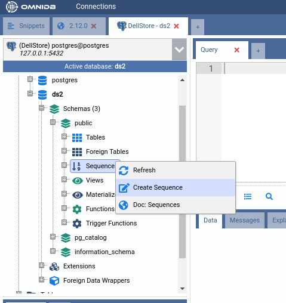
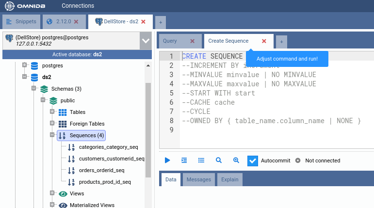
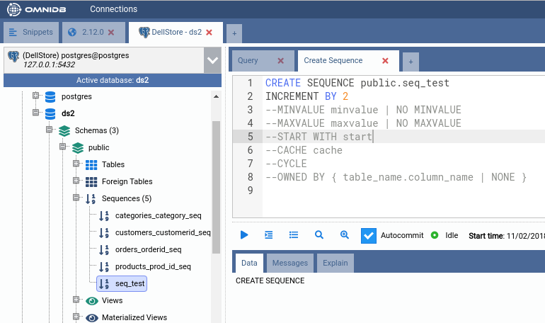
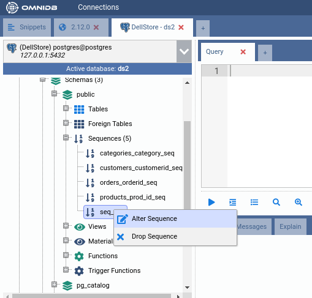
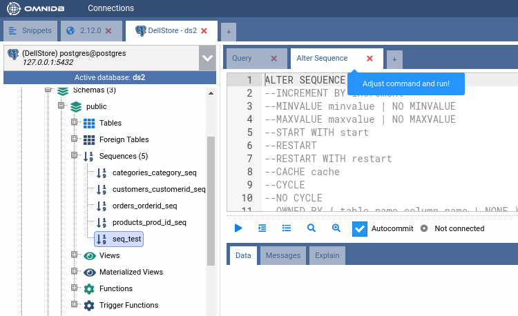
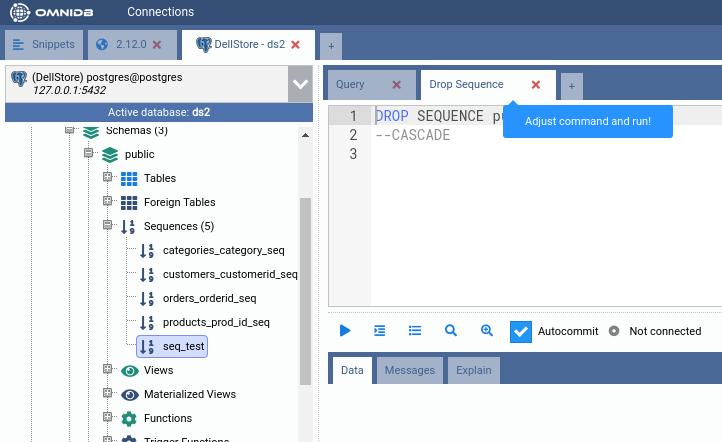

10. Managing other Elements
All PostgreSQL structures are possible to be managed with the use of SQL templates. This gives the user more power than using graphical forms to manipulate structures.
For example, let's consider the sequences inside the schema public of the
database ds2. To create a new sequence, right click on the Sequences
node, and choose Create Sequence.


After you change the name of the sequence, you can uncomment other command options and set them accordingly to your needs. When the entire command looks fine, just execute it and the new sequence will be created:

With right click on an existing sequence, you can alter or drop it. It will work the same way as the creation, by using a SQL template for the user to change.


